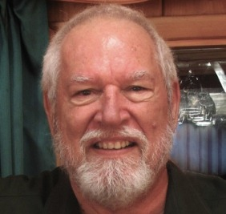

Professor Despommier was born in New Orleans in 1940, and grew up in California before moving to the New York area, where he now lives and works. He hs a Ph.D. in microbiology from the University of Notre Dame. For 27 years, he has conducted laboratory-based biomedical research at Columbia University with NIH-sponsored support. and is now an emeritus professor. He has always been interested in the environment and the damage we have caused by the simple act of encroachment. At present, he is am engaged in a project whose mission is to produce significant amounts of food crops in tall buildings situated in densely populated urban centers (see: www.verticalfarm.com and The Vertical Farm: feeding the world in the 21st century, hardcover, Thomas Dunne Books/St. Martin's Press, New York; soft cover, Picadore Press, October, 2011). This initiative has grown in acceptance over the last few years to the point of stimulating planners and developers around the world to incorporate them into their vision for the future city. To date, there are four vertical farms up and running in Japan, Korea, Seattle, and Chicago, with many more in the planning stage. It is his hope that vertical farming will become commonplace throughout the built environment on a global scale.